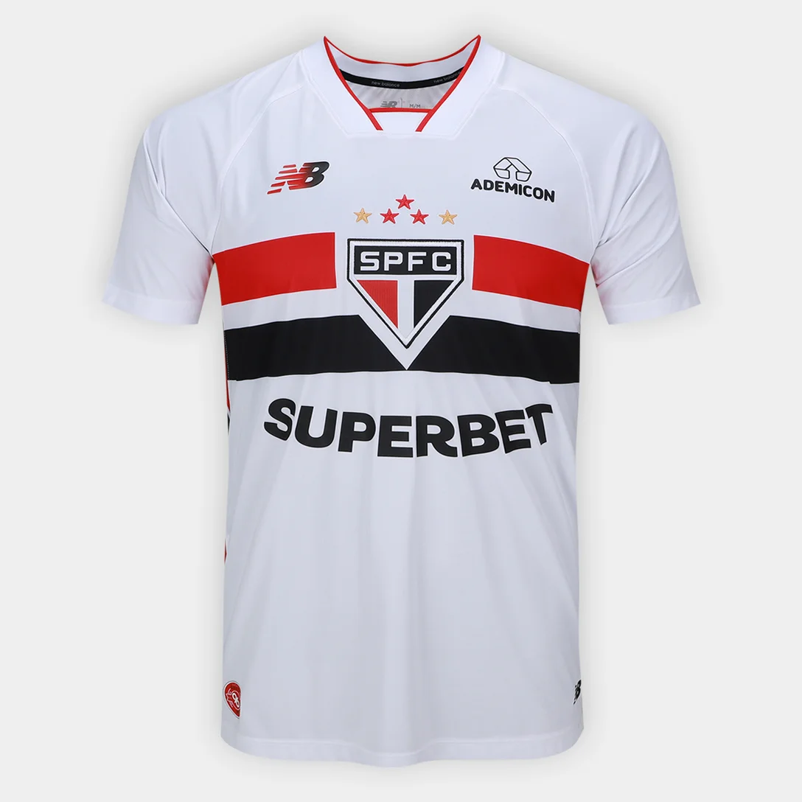

Lançamento
Camisa Oficial
Camisa SPFC 2026/27
Camisa titular oficial do São Paulo.
Escolha entre camisas oficiais, retrô, treino e lifestyle.

LançamentoCamisa titular oficial do São Paulo.
 Visitante
Visitante
Camisa visitante do São Paulo.
 Clássica
Clássica
Modelo retrô inspirado na história do clube.
 Treino
Treino
Camisa usada em treinos.
 Lifestyle
Lifestyle
Camiseta casual para torcedores.